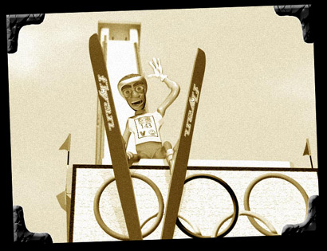

Update:I had some really good feedback from the A:M list on timing and dead spots, so I went back a fixed a few things. I really think I'm done now, but things that changed include:
I also added an animatic link below. It's kind of interesting, if only in retrospect.
Did you ever have one of those moments, staring out in space or whatever, and suddenly you have one of those *DING* moments where you say to yourself: That would be funny! Well, the idea for this little animation came about while driving down the freeway between radio stations.
The problem was, the idea came to me on December 26th and, being an Olympic theme, there was a limited time where this might be funny. Getting done in the summer didn't seem the right thing to do. So, my goal was to see if I could deliver a complete animation in one month of spare time (spare being roughly defined as "anything I could steal away from the family without my lovely wife making me sleep on the couch").
So, I sat down, sketched some ideas, storyboarded the basic flow, put the storyboard and sketches away, then went to work. This is the result. It's one minute long and, like anything, could be better, but I accomplished my main goal: An animation with story and sound delivered from scratch in one month. Not bad!
Before I go any further, I need to apologize to anyone that actually speaks Australian as I'm sure my attempt at an accent sounds ridiculous. Why I'm doing my own voice work and why Australian are two questions that are probably best left unanswered.
Major lessons learned:
Major "If I'd only had more time": The actual starting motion of the skier is too floaty and slow. Not enough to look SloMo and not enough to look crisp. Oh, well. Better luck next time...
| Animation Downloads | |
| Quicktime - 320x240 (2.6Mb) | Quicktime |
| Windows WMV - 320x240 (1.8Mb) | WMV |
Below, I have a link to the Animatic from my sketches. I didn't use an animatic during production, but it seems like I might next time. The sharp eyed will not that I sketched on Engineering Paper, so in that I reveal two secrets:
It's interesting to look back and see what changed in the course of production:
| Animatic | |
| Animatic Quicktime - 320x240 (400k) | Quicktime |
| Statistics | |
| Project Duration | One Month (12/26/01-01/26/02) |
| Total Project Diskspace | 2Gb |
| Average Frame size (640x480) | 850K Targa |
| Average Render Time | 2min |
| Render Machine | 1GHz Athlon - 768M RAM |
Here are a couple snaps from the production.
|  | |
| This is the ill-fated star of the animation. He's named Louie. | This is Chuck and Buck Duck, two buddies just out for a little fun. |
|---|
As always, all feedback, positive and negative is appreciated and welcome here. Thanks, Darrin Mossor
Animation created with Hash's Animation:Master
|
This document maintained by
webmaster@mossor.org. |